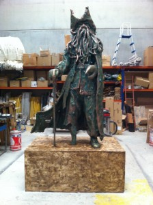

Creaciones personalizadas de tematizaciones, figuras, atrezzo, escenografías, prótesis…
Trabajamos con materiales primarios como el barro, la madera y el hierro. Y otros tan actuales como el porexpán, también conocido como corcho blanco o EPS, fibra de vidrio, resina, látex, silicona, PVC, metacrilato, aluminio y un largo etcétera. Todo ello en distintos acabados, teniendo en cuenta la dureza y finalidad de la obra. Con la posibilidad de aplicarles leds.
Contamos con maquinaria especializada en el corte y fresado 2d y 3d.
Tematización de pequeñas y grandes infraestructuras
Realizamos todo tipo de tematizaciones en cualquier superficie, ya sea arena de playa, rocosa o lisa, para Bares, Minigolf, Piscinas, Centros Comerciales, y todo tipo de Locales…

Construcción de Escenografías y atrezzo
Creamos cualquier tipo de escenografía para cine, teatro, televisión… Y realizamos el atrezzo necesario para el mismo.
{kind=link}
Obras Personalizadas
Esculturas hechas a mano

Diseños 3D orgánicos
{kind=link}
{kind=link}
Diseños 3D industriales
Diseños 2D y Rotulación
{kind=link}